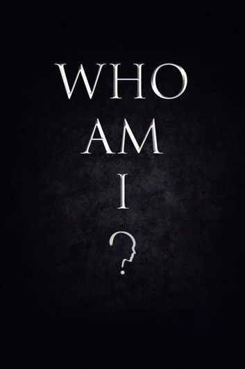

<ion-content [fullscreen]="true">

<ion-button class="button-fp" (click)="verApresentacao()">
  Get Started
  <ion-icon slot="end" name="chevron-forward-outline"></ion-icon>
</ion-button>
</ion-content>